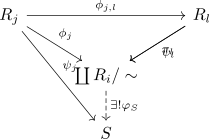

filtered colimit of rings
Proposition
Let $\mathcal{J}$ be a filtered category and $F: \mathcal{J} \Rightarrow \mathrm{CRing}$ be a diagram. Then the direct limit of $\mathcal{J}$ is isomorphic to
\begin{align*}
\coprod R_i / \sim
\end{align*}
where for $r_i \in R_i, r_j \in R_j$ it holds
\begin{align*}
r_i \sim r_j :\Leftrightarrow \exists k : \varphi_{i,k}(r_i) = \varphi_{j,k}(r_j)
\end{align*}
and addition resp. multiplication is defined as
\begin{align*}
[r_i] \cdot [r_j] =& [ \varphi_{i,k}(r_i) \cdot \varphi_{i,k}(r_j)] \\
[r_i] + [r_j] =& [ \varphi_{i,k}(r_i) + \varphi_{i,k}(r_j)] \\
\end{align*}
Proof
monoid
consequence of direct limit of monoids
abelian group
consequence of direct limit of abelian groups
distributivity
Let $r_i,r_j,r_l$, w.l.o.g. with $k$ as upper bound for $i,j,k$ (see: welldefinedsness), it follows that
\begin{align*}
[r_i] \cdot \left( [r_j] + [r_l] \right) =& [r_i] \cdot \left([\varphi_{j,k}(r_j) + \varphi_{l,k}(r_l)]\right) \\
=& [\varphi_{i,k}(r_i) \cdot \left(\varphi_{j,k}(r_j) + \varphi_{l,k}(r_l)\right)] \\
=& [\varphi_{i,k}(r_i) \cdot \varphi_{j,k}(r_j) + \varphi_{i,k}(r_i) \cdot \varphi_{l,k}(r_l)] \\
=& [\varphi_{i,k}(r_i) \cdot \varphi_{j,k}(r_j)] + [ \varphi_{i,k}(r_i) \cdot \varphi_{l,k}(r_l)] \\
=& [\varphi_{i,k}(r_i)] \cdot [\varphi_{j,k}(r_j)] + [ \varphi_{i,k}(r_i)] \cdot [\varphi_{l,k}(r_l)] \\
=& [r_i] \cdot [r_j] + [r_i] \cdot [r_l]
\end{align*}
and analog for the other side
universal property
Follows from

where
\begin{align*}
\varphi_S: \coprod R_i / \sim \rightarrow& S \\
[a_j] \mapsto& \psi_j(a_j)
\end{align*}